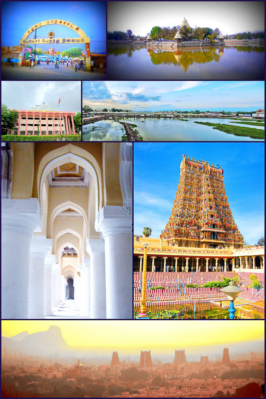
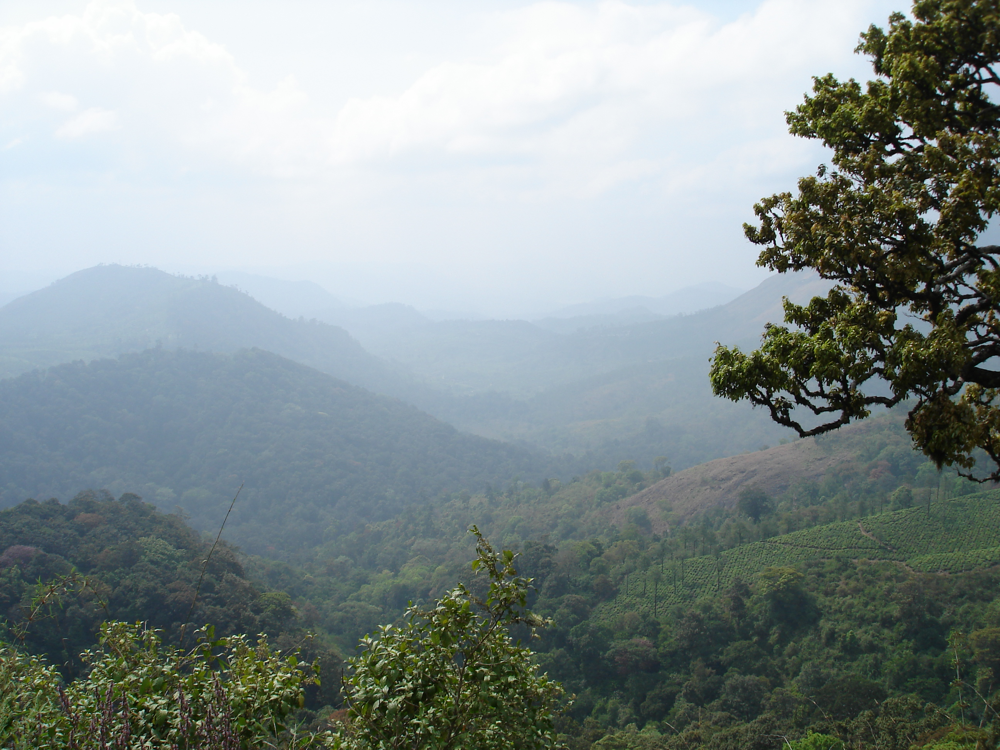
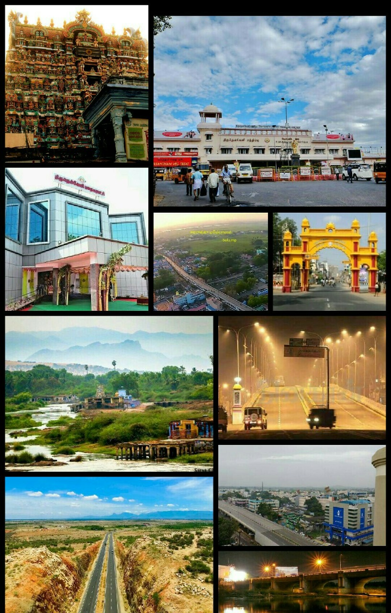
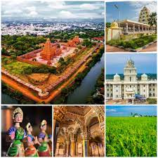
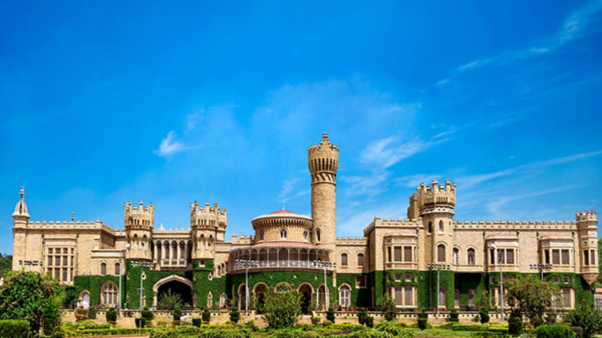

Chennai, the capital of TamilNadu, is considered onesh of the important centres for
industries, economy, culture, and education in South India.
Also known as Madras, the city is famous forits fascinating history, rich tradition and culture,
mouthwatering cuisine, beautiful beaches,
and the best health facilities. If you plan a trip to chennai, you can opt for a bus in Easyway Bushire,
where you can experience the best customer service and prices.

Madurai is known as the North-Indian state Tamil Nadu's cultural capital. The 44th most
popular city in India is the third-largest city in Tamil Nadu.
Madurai city is located on the banks of Vaigai river. Meenakshi TEmple and Tirumalai Nayak Palace are the
most famous and prominent among the monuments.
If you plan a trip to madurai, you can opt for a bus in Easyway Bushire, where you can experience the
best customer service and prices.

Coimbatore tops the list for being the safest places for women in India. Coimbatore tops
teh list of being the source of sweet water. Coimbatore is a place for many
beautiful temples. Coimbatore is a home for many educational institutes and universities. Coimbatore is a
home for many line automation and robotion industries.
Coimbatore is known as the Manchester of South India. It has mainly textile industries. If you plan a
trip to coimbatore, you can opt for a bus in Easyway
Bushire, where you can experience the best customer service and prices.

Tirunelveli also known as Nellai and historically (during British rule) as Tinnevelly.
Tirunelveli is a city in the southern part of Tamil Nadu, India.
It is also called Nellai. Tamirabarani River flows through Tirunelveli. Tirunelveli is famous for a sweet
that is generally referred to as 'Alwa' in Tamil.
If you plan a trip to Tirunelveli, you can opt for a bus in EasyWay Bushire, where you can experince the
best customer service and prices.

Thanjavur is a town in TamilNadu, India. It was the capital of earlier Chola Kingdom. It
is called the Rice Bowl of Tamil Nadu.Thanjavur is an important
center of South Indian religion, art and architecture.Thanjavur is considered as the granary of India. If
you plan a trip to Thanjavur, you can opt for
a bus in Easyway Bushire, where you can experience the best customer service and prices.

Since the IT sector and the startups are growing rapidly in Bangalore, it is referred to
as the 'Silicon Valley of India'. It is the home of several
prestigious industries, universities, and IT companies. It is known as the city of the garden due to the
prsence of several beautiful parks and gardens.
For instance: Cubbon Park, etc. If you plan a trip to Bangalore, you can opt for a bus in Easyway
Bushire, where you can experience the best customer service and prices.